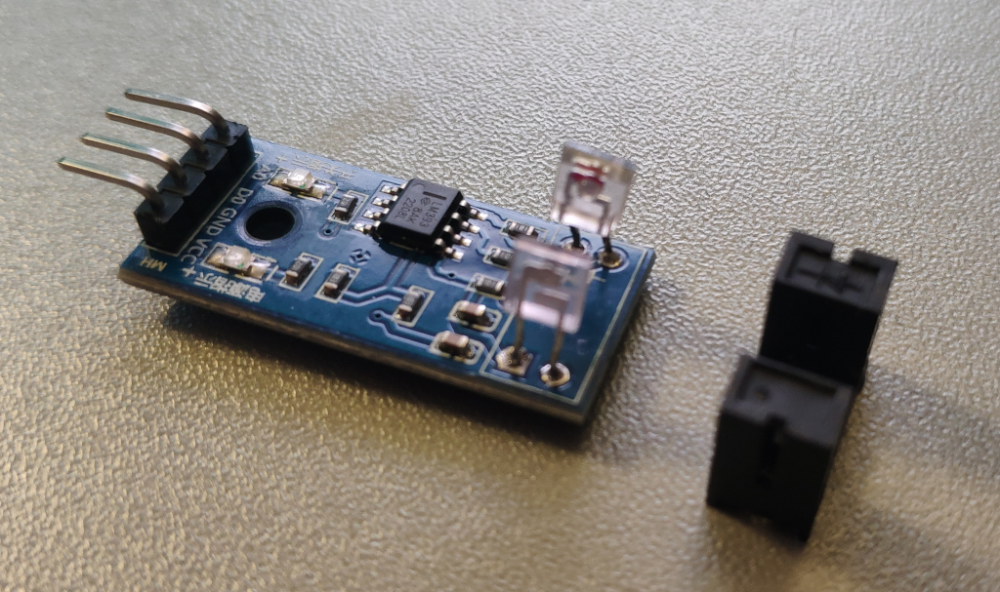

What
In order to add wheel odometry I made additions hardware, electronics and software. For the hardware I needed to add a wheel encoder disk to the motor axles. This was 3D printed. As for the electronics, in order to pickup interruptions of that encoder disk, I needed to position a light barrier such that it doesn’t jam the moving parts. For the software I had to get that PCF8583 I2C realtime clock chip to work as an impulse counter.
Contents
Contents
When
Wheel Odometry
Since most SLAM algorithms in ROS can’t function reliably without wheel rotation data, I took the challenge to modify the motors to add wheel rotation sensors.
The DirtDevel Spider has modular wheel assemblies that can be easily removed by loosening a cover on the bottom of the robot.
Background
Prebuilt motors with encoders
There are motors on the market with gearboxes that have built-in encoders. I’m more in favor of coming up with my own solution though, because
- such a motor with encoder probably wouldn’t fit into my existing robot
- it would mean buying more motors and, for other projects, not being able to use my assortment of DC motors that I’ve been salvaging for decades
- there’s a lot less to learn
- it’s also more expensive
Additionally I have to admit I didn’t think custom building rotary encoders would end up this tedious.
However part of it was related to software and electronics and hence issues I would have run into either way.
Magnetic Switches
The first idea I had was to glue a magnet into the spokes of the wheel and use a magnetic switch to measure full wheel rotations.
However this approach is inaccurate and can only measure full rotations. I had to come up with something better.
Optical Encoder Wheel
A much better solution is to use an encoder wheel an a small light barrier. Adding this proved a bit challenging.
How
Hardware
For the optical encoder wheel approach we need to get an encoder disk on a moving part inside or on the axle of the motor transmission.
The wheel assembly
So I opened the wheel assembly of the robot and had a look at where I could realistically place an encoder wheel and light barrier.
There is hardly any space inside the gear box.
The main gear has to great of a width to fit a light barrier over it and that would have probably not worked well due to the teeth of the gear wheel being too small for the light barrier to pickup.
The assembly under neath the main gear is actually a planetary gear setup connected to a worm drive. I found that quite impressive and good to know for the future: Should it ever break I’ll switch those gears.
In the end I settled for the main axle as my attack vector.
Encoder wheel
It was easy to write a small for-loop in OpenSCAD to generate an encoder wheel. I had to try three different designs until I had one that would fit exactly between wheel and motor assembly without jamming the motor. It’s required to print to .5 millimeter accuracy just at the limit of my Ender 3 Pro 3D printer.
The diameter couldn’t be much more smaller, otherwise the gaps would have to be smaller and - as seen on the smallest wheel. The 1mm gaps are just too small for my printer.
A different, perhaps more accurate, solution could have been to use a regular laser printer to print to transparent overhead projector slides. They are thin and can wobble, but could have been glued to a solid 3D printed disk to make them stable. This is something to keep in mind for the future.
Assembly
But as can be seen in this picture the 3D printed solution fits just fine. The only concern I have is that dirt might get stuck in the encoder wheel.
The light barrier had to be carefully positioned and glued along with its wire to just so get passed the other plastic ridges.
I did have to cut into the plastic a bit to position that light barrier.

In the end it fits into the robot wheel bay perfectly.
Electronics
In order to use my custom rotary wheel encoders - one on each of the two wheels - I needed a way to get the count of light barrier interruptions into the ESP32 microcontroller.
Since I’m setting up all the electronics with I2C, I used an PCF8583 real-time clock as an impulse counter. A small micro-controller would have been cheaper and could of handled the debouncing issues I encountered much better, but then I’d have to write additional software for it, potentially with more energy consumption, developing, debugging, flashing, pin connectors for that and a much less clean solution over all.
First attempt directly connecting the light barrier
My first attempt was just a small board connected to the light barrier on one end and to the I2C bus on the other end. For this I used a 10k and a 220 Ohm resistor on Diode+ and Emitter+ of the light barrier to pull up to 5V+. The counter chip connects to between the Diode+ and the 10k pull-up resistor. Diode- and Emitter- are connected to GND.
Smaller issues
I ran into some smaller issues.
- it seems there are not so many people using the PCF8583 as an impulse counter in general
- the PCF8583 requires carefully setting registers at initialisation to make it function not as a clock, but as an impulse counter
- after issues with the initialisation sequence, the only ready-made code I could find is 6 years old and on GitHub [1]
- it seems to be based on [2] and both have a “Wire.begin()” in the constructor that interfered with by other I2C code and completly blocked the I2C bus for all devices when used. It took some time to find that error.
- the datasheet states the OSCO “Oscillator Output” (OSCO) is to be used for impulse counting. I don’t know if there is something else wrong with my circuit, but for me it seems to only work with “Oscillator Input” (OSCI) which also sounds more reasonable.
Either way after some of trial and error I was able to get it to count.
Debugging
In order to debug these issues I eventually even pulled out the oscilloscope to verify my light barrier circuit was working properly. For this I had to wire the light barrier part of the circuit on a bread board.
My circuit worked fine. At that point I was fairly sure I was just missing some signal debouncing.
Adding debouncing
Without debouncing the chip counts anything from 50 to 70 times per light barrier interruption due to a bouncing of the input signal.
This is common with any mechanical contracts be it metal plates coming into contact for example when humans interact with a button, magnets passing a sensor or, as in this case, light barriers.
The signal tends to “flicker” and the remedy for this is either software debouncing with a timeout or in hardware, a solution could be having a capacitor slowly charging and dischanging along with the input signal, smearing it, in order to make the signal rise and fall more evenly. Additionally one might add a schmitt-trigger or analog comparator to give a clean digital signal that is either ‘1’ or ‘0’.
Software debouncing wouldn’t have been possible as I can’t reprogram the PCF8583 and so I needed hardware debouncing.
Reading online I found suggestions
- a 100nF capacitor could help. It’s charging/decharging curve would smoothen the signal.
and additionally either
- a schmitt-trigger would trigger only when the there is a transition from high to low or low to high
- or an LM393 comparator that would give a digital ‘1’ when the signal is above a threshold and ‘0’ otherwise
When searching the LM393 I found that there are actually ready-made Arduino modules for this exact purpose: couting interruptions on an encoder disk with a light barrier.
They contain the LM393, carefully selected capacitors and the resistors for light barriers.
I immediately bought a pack of these for this and future projects.
Once they arrive I’ll desolder the light barrier on the board and solder in the wires to my own light barriers that are inside the left and right wheel assemblies. The module will then connect to my event counter board. So these boards will sit inbetween the light barrier and inputs the two PCF8583 giving them a clean debounced signal.
Update 2024-10-12
The wheel debounce needed some more attention. In order to connect the LM393 rotary counter boards I simply pulled off the plastic cap of the light barrier that comes preinstalled on the boards.
This exposes the LED and photodiode. Soldering these boards is a bit tricky probably due to solder resist coating. I found it’s easier to cut the leds of LED and photodiode and solder to them instead.
At first the contraption didn’t count wheel rotations at all. So I wired the circuit on a bread board with a separate light barrier.
What’s nice about these LM393 rotary counter boards is that they have two leds. One for operation and one for interruption of the light barrier. As you can see they work fine with my light barriers soldered to them.
So the boards seem to be working, the light barrier is compatible and the wiring is correct. So it had to be an unclean signal once again.
So I connected my oscilloscope to see what was happening while I manually interrupt the light barrier.
I saw there was still a somewhat unclean signal. So I set up a resistor-capacitor circuit.
The idea here is to have a capacitor slowly charge and dischage with the signal thereby evening the signal out.
I used a 1 kOhm resistor. As for the capacitor 10 uF was too large for quick interruptions. 0,47 uF worked perfect for my manual light barrier interruptions. The PCF8583, connected via its OSCI-input (the datasheet falsely states OSCO) properly counted the interruptions. I could repeatidly interrupt 10 times and get exactly 10 as count at the microcontroller.
So I soldered the circuit up and put everything back on the robot. And it didn’t work once again. Next I removed the wheel assembly and experimented some more.
Turns out the light barrier did not register the interruptions of the rotating disk. The circuit is correct though, as when pushing a piece of cardboard inbetween the light barrier, it did register interruptions.
At that point I quickly learned why encoder disks commonly are black. After painting it black with a standard Edding marker, everything worked as expected.
So I put the board back on the robot.
And now it counted, but would sometimes still misscount. I found for manual interruptions, even quick ones, the capacitor size is perfect, but for the fast spinning wheel on the robot, the capacitor is still too large.
After building the second wheel encoder circuit board, and leaving out that Resistor-Capacitor circuit entirely, I found it would actually work better without the additional electronics.
I guess I got side-tracked by the other issues and with the issue of the rotary disk not being black. At least I learned a great deal about resistor-capacitor circuits and hardware debouncing. For other scenarios with slower signals e.g. reading the gas meter this circuit (see GasMeterWifi) would probably have worked very well - but cores & power weren’t constrainted and so I chose software debouncing instead.
Debouncing in hardware is extremely specific to the application regarding the size of the capacitor.
Progress
Conclusion
With wheel odometry the robot is able to count wheel rotations. The main micro-controller does not have to be involved with the counting via interrupts. Instead the PCF8583 I2C realtime clock takes care of this and the micro-controller can get the current count at any time via the on-board I2C bus.
As of now I still have some software issues running the two clocks at the same time. They work independantly and have different I2C adresses, as intended, by the setting the adress at their respective A0 pins.
Another interesting aspect I didn’t think of when starting this is that running the wheel in reverse will of course still count as if the wheel was running forward. In order to do proper odometry we need to take the direction in which the motor is turning into account. In software this means, even though I have a spearate chip responsible for counting, I need to syncronously update wheel count before changing directions. Otherwise the wheel incrementations may be considered in the wrong direction.
Having figured out how to use the I2C realtime clocks as counters and the resistor-capacitor circuits with LM393 comparator for debouncing in hardware opens a variary of possibilities for other projects that involve counting events or controlling motors percicely without relying on stepper motors or servo motors. We can use the same approach to accurately measure rotation of any motor of any size. This can be used with small DC motors in remote controlled cars, to cordless drill motors all the way to AC washing machine motors.
1] https://github.com/xoseperez/pcf8583 2] https://github.com/edebill/PCF8583